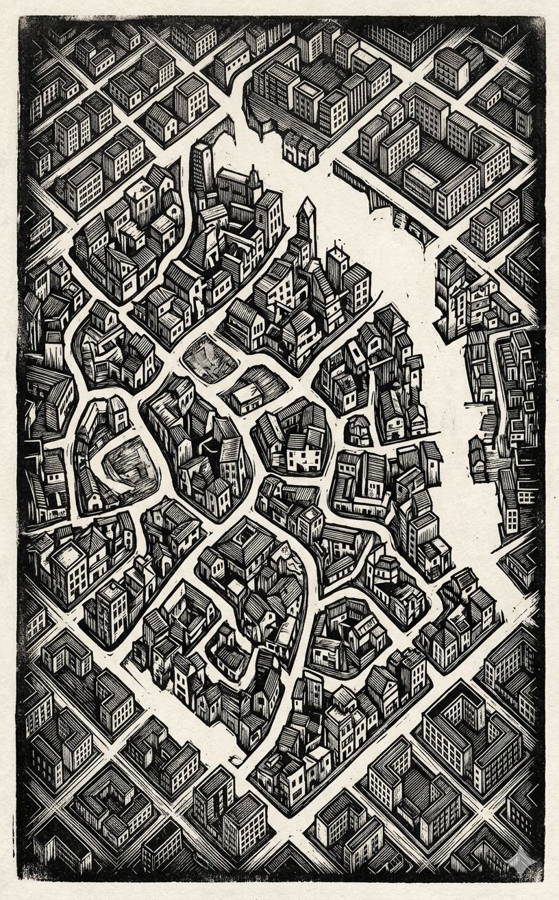

El libro cerrado


Una caja de cerillas cerrada sobre una superficie de piedra gris. El interior —el escarabajo— no existe para el observador y nunca existirá desde afuera: es la privacidad hecha objeto cotidiano.

La filosofía es la botella. El corpus es el intento de mostrar a la mosca la salida.

Visto desde muy arriba, un solar de construcción en una ciudad que podría ser Viena en 1910 o Cambridge en 1940 —la ambigüedad es estructural, no decorativa. El lenguaje ocurrió ahí, en ese hueco que separa la boca de la piedra.

El epitome pesa más que su extensión. Cada aforismo es un golpe contra el propio deseo de teorizar — y el texto lo sabe, por eso se interrumpe y recomienza. El paisaje que dibuja no es una doctrina, sino el mapa de un extrañamiento: el lenguaje no funciona como creíamos, y esa pérdida es la única ganancia posible.
Un epitome que no aligera el peso, sino que lo concentra — como si las 3.400 palabras fueran el sedimento de dieciséis años de no poder decir otra cosa.
Recibir estas páginas es recibir una advertencia. No un resumen, sino un sedimento. Cada parágrafo es un esbozo, no un ladrillo. El corpus no explica una doctrina; describe un método de combate contra el embrujo del lenguaje. Viene con una cuota de palabras cumplida, como si el autor hubiera firmado un contrato con la brevedad. Pero la brevedad no aligera: concentra la densidad de un paisaje atravesado durante dieciséis años. Lo que se encuentra aquí no es un sistema, sino el gesto de señalar la salida del tarro.
Título — Epítome — Investigaciones filosóficas
Autor — Ludwig Wittgenstein
Año — 1953
Género — Filosofía analítica / Aforismo filosófico
Extensión estimada — 3.400 palabras, aproximadamente 14 páginas, 8 secciones numeradas más un prólogo
Idioma original — Alemán
Palabra más frecuente con contenido — Lenguaje
El corpus condensa las Investigaciones filosóficas de Wittgenstein, articulando una crítica a la concepción referencial del lenguaje a través de la noción de “juegos de lenguaje” y “semejanzas de familia”. Despliega una investigación sobre el seguimiento de reglas, argumentando que éste es una práctica pública y no un proceso mental privado. Finalmente, aborda el problema del lenguaje privado, concluyendo que la sensación interna no es un objeto designable en un lenguaje que carece de criterios públicos de corrección.
La investigación parte de la imagen agustiniana del lenguaje como denominación de objetos, para mostrar su insuficiencia mediante el ejemplo del tendero que usa tablas de muestras. Introduce los juegos de lenguaje como totalidades formadas por lenguaje y acción, enfatizando la diversidad de usos sobre la unidad esencial. Rechaza la idea de una esencia común del lenguaje, proponiendo en su lugar “semejanzas de familia” que entrecruzan los fenómenos. La definición ostensiva se revela interpretable de múltiples maneras, por lo que la significación de una palabra reside en su uso, no en su portador. La paradoja del seguimiento de reglas muestra que cualquier acción puede hacerse concordar con una regla, disolviendo la idea de interpretación infinita y afirmando que seguir la regla es una práctica social. El argumento del lenguaje privado, ejemplificado en el diario de sensaciones y la caja del escarabajo, demuestra que un lenguaje puramente interno carecería de criterios de corrección, volviendo inútil el término “correcto”. La filosofía no explica ni deduce, sino que describe el uso efectivo del lenguaje para disolver los problemas que surgen cuando el lenguaje “está de fiesta”. El objetivo final es mostrar a la mosca la salida del tarro, es decir, liberar el entendimiento del embrujo gramatical.
El corpus produce una extraña doble sensación: la de estar ante una verdad inapelable y, al mismo tiempo, ante una advertencia de no tomarla como tal. Su forma — fragmentaria, iterativa, de autointerrupción — es su mensaje. No se deja usar como manual; exige ser rehecho en cada lectura. Es un texto que no quiere tener discípulos, sino compañeros de viaje. Su temperatura es la de alguien que ha visto el límite y solo puede señalarlo sin cruzarlo.
En lo siguiente publico pensamientos, el sedimento de investigaciones filosóficas que me han ocupado en los últimos dieciséis años. Conciernen muchos objetos: el concepto de significación, de comprensión, de la oración, de la lógica, los fundamentos de la matemática, los estados de conciencia y otras cosas. Las observaciones filosóficas de este libro son, por así decir, una cantidad de esbozos del paisaje que surgieron en estos largos y complicados viajes. No quisiera ahorrarles a otros el pensar. Quisiera, si fuera posible, estimular a alguien a pensamientos propios.
En estas palabras recibimos, me parece, una imagen determinada de la esencia del lenguaje humano. Las palabras del lenguaje denominan objetos —las oraciones son combinaciones de tales denominaciones. En esta imagen del lenguaje encontramos la raíz de la idea: cada palabra tiene una significación. Esta significación está asignada a la palabra. Es el objeto por el que la palabra está.
Piensa ahora en este uso del lenguaje: envío a alguien a comprar. Le doy un papel en el que están escritos los signos: «cinco manzanas rojas». Lleva el papel al tendero; éste abre el cajón en el que está el signo «manzanas»; luego busca la palabra «rojo» en una tabla y encuentra frente a ella una muestra de color; ahora dice la serie de los numerales básicos —supongo que los sabe de memoria— hasta la palabra «cinco» y por cada numeral coge una manzana del cajón que tiene el color de la muestra.
En estas palabras queda descrito un sistema de comunicación; solo que no todo lo que llamamos lenguaje es ese sistema.
Dispersa la niebla el estudiar los fenómenos del lenguaje en tipos primitivos de uso, en los que puede verse claramente el fin y el funcionamiento de las palabras. El enseñar el lenguaje no es aquí un explicar, sino un adiestramiento.
Llamaré a estos juegos «juegos de lenguaje» y hablaré a veces de un lenguaje primitivo como de un juego de lenguaje. También llamaré «juego de lenguaje» al todo formado por el lenguaje y las actividades con las que está entretejido.
Piensa en las herramientas en una caja de herramientas: hay allí un martillo, unos alicates, una sierra, un destornillador, una regla, un bote de cola, cola, clavos y tornillos. Tan diversas como las funciones de estos objetos son las funciones de las palabras.
Cuando decimos: «cada palabra del lenguaje designa algo», con ello no se ha dicho aún nada; a no ser que hayamos explicado exactamente qué distinción deseamos hacer.
¿Cuántas clases de oraciones hay? ¿Acaso aserción, pregunta y orden? —Hay innumerables de tales clases: innumerables tipos distintos de uso de todo lo que llamamos «signos», «palabras», «oraciones». Esta multiplicidad no es algo fijo, dado de una vez para siempre; sino que surgen nuevos tipos del lenguaje, nuevos juegos de lenguaje, y otros envejecen y se olvidan. La palabra «juego-de-lenguaje» quiere subrayar aquí que el hablar del lenguaje es parte de una actividad, o de una forma de vida.
Mandar, preguntar, relatar, platicar pertenecen a nuestra historia natural igual que andar, comer, beber, jugar.
Imaginar un lenguaje significa imaginar una forma de vida.
Nuestro lenguaje puede verse como una ciudad vieja: un laberinto de callejuelas y plazas, casas viejas y nuevas, y casas con ampliaciones de distintas épocas; y esto rodeado por una multitud de nuevos barrios con calles rectas y regulares y con casas uniformes.
Solo el que ya sabe algo puede preguntar sensatamente por la denominación.
La definición ostensiva puede, en todo caso, interpretarse así o de otra manera.
Donde nuestro lenguaje nos hace suponer un cuerpo, y no hay ningún cuerpo, allí, querríamos decir, hay un espíritu.
Los problemas filosóficos surgen cuando el lenguaje está de fiesta.
Es importante establecer que la palabra «significación» se usa de manera contraria al uso lingüístico cuando se designa con ella la cosa que «corresponde» a la palabra. Esto es confundir la significación de un nombre con el portador del nombre. Si el señor N. N. muere, se dice que muere el portador del nombre, no que muere la significación del nombre.
Para una gran clase de casos de utilización de la palabra «significación» —aunque no para todos los casos de su utilización— puede explicarse esta palabra así: la significación de una palabra es su uso en el lenguaje.
No tiene ningún sentido hablar sin más de las «partes simples de la silla». «Simple» quiere decir: no compuesto. Y aquí importa: ¿en qué sentido «compuesto»?
El nombrar no es aún ningún movimiento en el juego de lenguaje —así como tampoco lo es en el juego de ajedrez el colocar una figura. Con el nombrar una cosa no se ha hecho aún nada. Tampoco tiene nombre alguno, excepto en el juego. El nombrar es una preparación para la descripción. El nombrar no es aún en absoluto un movimiento en el juego de lenguaje.
Este patrón es un instrumento del lenguaje con el que hacemos enunciados de color. No es, en este juego, lo representado, sino el medio de representación.
Si olvidamos qué color es el que lleva este nombre, pierde la significación para nosotros; es decir: ya no podemos jugar con él un determinado juego de lenguaje. Y la situación es entonces comparable a aquella en que se ha perdido el patrón que era un medio de nuestro lenguaje.
Aquí tropezamos con la gran pregunta que está detrás de todas estas consideraciones. En lugar de señalar algo que es común a todo lo que llamamos lenguaje, digo que a estos fenómenos no les es en absoluto común una sola cosa por la cual usamos para todos la misma palabra —sino que están emparentados entre sí de muchas maneras diversas. Y a causa de este parentesco, o estos parentescos, los llamamos a todos «lenguajes».
Contempla, por ejemplo, los procesos que llamamos «juegos». Quiero decir juegos de tablero, juegos de cartas, juegos de pelota, juegos de combate, etc. ¿Qué es común a todos? —No digas: «tiene que serles algo común, pues de lo contrario no se llamarían ›juegos‹» —sino mira si algo les es común a todos. Pues si los miras, no verás ciertamente algo que sea común a todos, sino semejanzas, parentescos, y por cierto toda una serie. ¿Son todos «entretenidos»? Compara el ajedrez con el molino. ¿O hay en todos un ganar y un perder, o una competencia de los que juegan? Piensa en los solitarios.
El resultado de esta consideración dice así: vemos una complicada red de semejanzas que se superponen y entrecruzan. Semejanzas en lo grande y en lo pequeño.
No puedo caracterizar mejor estas semejanzas que con la palabra «semejanzas de familia»; pues así se superponen y entrecruzan las diversas semejanzas que existen entre los miembros de una familia: estatura, rasgos faciales, color de ojos, paso, temperamento, etc. Y diré: los «juegos» forman una familia.
¿Cómo está entonces delimitado el concepto de juego? ¿Qué es aún un juego y qué ya no lo es? ¿Puedes indicar los límites? No. Puedes trazar algunos: pues aún no se ha trazado ninguno.
¿Es un concepto borroso un concepto en absoluto? —¿Es una fotografía borrosa aún una fotografía de una persona?
Y si alguien quisiera decir: «Así que el concepto de número para ti está explicado como la suma lógica de aquellos conceptos individuales emparentados entre sí» —eso no tiene que ser así. Pues puedo dar al concepto «número» límites rígidos de esa manera, pero también puedo usarlo de modo que el alcance del concepto no esté cerrado por un límite.
Cuando los filósofos usan una palabra —«saber», «ser», «objeto», «yo», «oración», «nombre»— y tratan de captar la esencia de la cosa, siempre hay que preguntarse: ¿es que esta palabra se usa realmente así en el lenguaje en el que tiene su hogar?
La filosofía no puede en ningún modo tocar el uso efectivo del lenguaje; en última instancia solo puede describirlo.
Toda explicación debe desaparecer, y solo la descripción debe tomar su lugar. Y esta descripción recibe su luz, es decir su fin, de los problemas filosóficos. Estos no son empíricos, sino que se resuelven mediante una perspectiva sobre el trabajo de nuestro lenguaje, y justamente de tal modo que este se reconoce: en contra de un impulso de malentenderlo. Estos problemas se resuelven, no aportando nueva experiencia, sino compilando lo que ya se conoce desde hace mucho. La filosofía es una lucha contra el embrujamiento de nuestro entendimiento por los medios de nuestro lenguaje.
Una regla está ahí como un indicador de camino. —¿No deja ninguna duda abierta sobre el camino que debo tomar? ¿Muestra en qué dirección debo ir cuando paso junto a él; si a lo largo de la carretera, o del camino de campo, o en línea recta?
Comprendemos la significación de una palabra cuando la oímos o pronunciamos; la captamos de golpe; y lo que así captamos es algo distinto al «uso» extendido en el tiempo.
El cuadro del cubo nos sugería ciertamente un uso particular, pero yo podía también usarlo de otra manera. No pienses en absoluto en el comprender como en un «proceso anímico». —Pues ésa es la manera de hablar que te confunde. Sino pregúntate: ¿en qué tipo de caso, bajo qué clase de circunstancias decimos entonces «ahora sé cómo seguir»?
Los criterios que aceptamos para el «encajar», el «poder», el «comprender» son mucho más complicados de lo que a primera vista puede parecer. Es decir, el juego con estas palabras, su uso en el tráfico lingüístico del que son instrumento, es más intrincado —la función de estas palabras en nuestro lenguaje es distinta de lo que nos sentimos tentados a creer.
En el sentido en que para el comprender hay procesos característicos (también procesos anímicos), el comprender no es un proceso anímico.
Lo que me autoriza a decir, en tal caso, que comprendo, que sé cómo seguir, son las circunstancias bajo las que tuve tal vivencia.
El alumno domina ahora —juzgado según los criterios ordinarios— la serie de los números básicos. Le enseñamos ahora también a escribir otras series de números cardinales, y llegamos a que escriba, por ejemplo, ante órdenes de la forma «+ n», series de la forma
0, n, 2n, 3n, etc.
ante la orden «+1», la serie de los números básicos. — Hicimos nuestros ejercicios y sondeos de su comprensión en el espacio numérico hasta 1000.
Dejamos que el alumno continúe una vez una serie (por ejemplo, «+2») más allá de 1000 —entonces escribe: 1000, 1004, 1008, 1012.
Le decimos: «¡Mira lo que estás haciendo!» —No nos entiende. Decimos: «¡Debías añadir dos; mira cómo has comenzado la serie!» —Responde: «¡Sí! ¿Acaso no es correcto? Pensé que así debía hacerlo.»
En el caso así: este ser humano entiende de por sí ese mandato, con base en nuestras explicaciones, del modo en que nosotros entendemos el mandato: «Añade siempre 2 hasta 1000, 4 hasta 2000, 6 hasta 3000, etc.»
«¿Qué dices, pues, equivale a que al cumplir correctamente la orden ›+n‹ se necesita en cada etapa una nueva comprensión —intuición?» —Para cumplirla correctamente. ¿Cómo se decide cuál es el paso correcto en un punto determinado? —«El paso correcto es el que concuerda con la orden —tal como fue pensada.»
La cuestión es precisamente qué es lo que en cualquier lugar «concuerda» con esa oración. O también —qué es lo que en cualquier lugar llamaremos «concordancia» con esa oración.
«¿Qué tiene que ver la expresión de la regla con mis acciones? —¿Qué clase de conexión existe allí?» —Pues, aproximadamente ésta: fui adiestrado a reaccionar de una manera determinada ante ese signo, y así reacciono ahora. Pero con eso solo has indicado una conexión causal, solo has explicado cómo llegó a ser que ahora nos guiemos por el indicador de camino; no en qué consiste propiamente este seguir-el-signo. No; también he insinuado que alguien solo se guía por un indicador de camino en la medida en que existe un uso constante, una costumbre.
Ninguna interpretación hecha, junto con lo interpretado, está en el aire; no puede servirle de apoyo. Las interpretaciones solas no determinan la significación.
No puede haber seguido una regla una sola vez solo un hombre, solo una vez en la vida. No puede haberse hecho una sola vez solo una comunicación, dado o entendido una orden, etc. —Seguir una regla, hacer una comunicación, dar una orden, jugar una partida de ajedrez son costumbres (usos, instituciones).
Entender una oración significa entender un lenguaje. Entender un lenguaje significa dominar una técnica.
Nuestro paradoja era ésta: una regla no podría determinar ningún modo de acción, pues cualquier modo de acción puede ponerse de acuerdo con la regla. La respuesta era: si cualquier cosa puede ponerse de acuerdo con la regla, entonces también en contradicción con ella. Por eso aquí no habría ni acuerdo ni contradicción.
Que hay aquí un malentendido se muestra ya en que en este curso de pensamientos ponemos interpretación tras interpretación; como si cada una nos calmara al menos por un momento, hasta que pensamos en una interpretación que está de nuevo detrás de ésta. Con ello mostramos que hay una concepción de una regla que no es una interpretación; sino que se manifiesta, de caso en caso de aplicación, en lo que llamamos «seguir la regla» y lo que llamamos «actuar en contra de ella».
Por eso «seguir la regla» es una práctica. Y creer que se sigue la regla no es: seguir la regla. Y por eso no se puede seguir la regla «privadamente», porque entonces creer que uno sigue la regla sería lo mismo que seguir la regla.
«¿Dices, pues, que la concordancia de los hombres decide qué es correcto y qué es falso?» —Correcto y falso es lo que los hombres dicen; y en el lenguaje los hombres están de acuerdo. Esto no es acuerdo de opiniones, sino de forma de vida.
Para la comunicación mediante el lenguaje no solo se necesita acuerdo en las definiciones sino también (por extraño que esto pueda sonar) acuerdo en los juicios.
¿Podría un ser humano llevar un diario sobre sus vivencias internas? —Un investigador que los observara y escuchara sus discursos podría lograr traducir su lenguaje al nuestro.
«Solo tú puedes saber si tenías la intención.» Eso podría decírsele a alguien cuando se le explica la significación de la palabra «intención». Entonces quiere decir: así usamos esta palabra.
El enunciado «las sensaciones son privadas» es comparable al: «la paciencia se juega solo».
¿Por qué no puede un perro fingir dolor? ¿Es demasiado honesto? ¿Podría enseñarse a un perro a fingir dolor? Quizás podría enseñársele a aullar como si tuviera dolor en ciertas ocasiones sin tenerlo. Pero a la auténtica fingición le faltaría todavía siempre a este comportamiento el entorno adecuado.
«No puedo imaginarme lo contrario de eso» no significa aquí: mi poder imaginativo no alcanza. Nos defendemos con estas palabras contra algo que por su forma nos hace pasar por un enunciado empírico, pero que en realidad es un enunciado gramatical.
El filósofo trata una pregunta como una enfermedad.
Pongámonos este caso. Quiero llevar un diario sobre la reaparición de cierta sensación. Para ello la asocio con el signo «E» y escribo este signo en un calendario por cada día en que tengo la sensación. Quiero observar primero que no puede pronunciarse una definición del signo. —Pero puedo dármela a mí mismo como una especie de definición ostensiva. Pero ¿cómo? ¿Puedo apuntar hacia la sensación? —No en el sentido ordinario. Pero hablo, o escribo el signo, y al hacerlo concentro mi atención en la sensación —apunto hacia ella, por así decir, interiormente. Pero ¿para qué esta ceremonia? ¡Pues eso parece ser solo eso! En nuestro caso no tengo ningún criterio para la corrección. Quisiera decir aquí: correcto es lo que siempre me parezca correcto. Y eso solo quiere decir que aquí no se puede hablar de «correcto».
Consultar una tabla en la imaginación es tan poco consultar una tabla como la imaginación del resultado de un experimento imaginado es el resultado de un experimento.
¿Hay quizás razones para llamar «E» el signo de una sensación? Quizás la manera en que este signo se usa en este juego de lenguaje.
Lo esencial de la vivencia privada no es en realidad que cada uno posea su propio ejemplar, sino que nadie sabe si el otro también tiene esto, o algo distinto.
Mira una piedra y piensa que tiene sensaciones. Uno se dice: ¡cómo pudo alguien tener siquiera la idea de atribuir una sensación a una cosa! Se la podría atribuir igualmente a un número. —Y ahora mira a una mosca revoloteando, y de inmediato esta dificultad desaparece, y el dolor parece poder adherirse aquí, donde antes todo era, por así decir, liso para él.
Supongamos que cada uno tuviera una caja con algo dentro que llamamos «escarabajo». Nadie puede mirar dentro de la caja del otro; y cada uno dice que sabe qué es un escarabajo solo por la vista de su escarabajo. —Da, pues, cabría que cada uno tuviera algo distinto en su caja. Sí, podría imaginarse que semejante cosa se modificara constantemente. —¿Y ahora, si la palabra «escarabajo» de esta gente tuviera sin embargo un uso? —Entonces no sería el de la designación de una cosa. La cosa en la caja no pertenece en absoluto al juego de lenguaje; ni siquiera como un algo: pues la caja podría estar también vacía. No, a través de esta cosa en la caja se puede «abreviar»; se cancela, sea lo que sea.
«Pero tú admitirás que hay una diferencia entre conducta dolorosa con dolor y conducta dolorosa sin dolor.» —¿Admitir? ¿Qué diferencia podría ser mayor? —«Y sin embargo siempre llegas de nuevo al resultado de que la sensación misma es una nada.» —No de ninguna manera. No es un algo, pero tampoco un nada. El resultado fue solo que una nada prestaría los mismos servicios que un algo sobre el cual no se puede decir nada. Solo rechazamos la gramática que quiere imponerse aquí.
El paradoja desaparece solo cuando rompemos radicalmente con la idea de que el lenguaje funciona siempre de un modo, sirve siempre al mismo fin: transmitir pensamientos —sean estos sobre casas, dolores, bien y mal, o lo que sea.
«¿Eres entonces un behaviorista encubierto? ¿No dices en el fondo que todo es ficción excepto el comportamiento humano?» —Si hablo de una ficción, entonces de una ficción gramatical.
¿Cómo se origina entonces el problema filosófico de los procesos y estados anímicos y del behaviorismo? —El primer paso es el completamente inadvertido. Hablamos de procesos y estados y dejamos sin decidir su naturaleza. Quizás sabremos más sobre ellos alguna vez —pensamos. Pero justamente con eso nos hemos comprometido con una determinada manera de ver. Pues tenemos un concepto determinado de lo que significa conocer mejor un proceso.
¿Cuál es tu objetivo en la filosofía? —Mostrarle a la mosca la salida del tarro atrapa moscas.
¿Qué tipo de objeto es algo, lo dice la gramática.
La esencia se expresa en la gramática.
No se puede adivinar cómo funciona una palabra. Hay que ver su aplicación y aprender de ella.
Una causa principal de las enfermedades filosóficas —dieta unilateral: uno alimenta su pensamiento con solo una clase de ejemplos.
«Pero las palabras, pronunciadas con sentido, no tienen solo superficie, sino también una dimensión de profundidad.» —Ocurre que algo distinto tiene lugar cuando se pronuncian con sentido que cuando simplemente se pronuncian. Cómo lo exprese no importa. Ya diga que tienen en el primer caso profundidad; o que en mí, en mi interior, ocurre algo; o que tienen una atmósfera —siempre viene a ser lo mismo.
En la filosofía no se sacan conclusiones. «¡Tiene que ser así!» no es una oración de la filosofía. La filosofía solo establece lo que todos le conceden.
«Quiero decir esto» —y apunto hacia la sensación— muestra ya con cuánta frecuencia queremos decir algo que no es ninguna comunicación.
«Wollte ich sagen …» Recuerdas diversos detalles. Pero ninguno de ellos muestra esta intención. Es como si se hubiera fotografiado una escena, pero de ella solo se ven algunos detalles dispersos; aquí una mano, allá un trozo de rostro, o un sombrero —el resto está oscuro. Y ahora es como si supiera con toda certeza qué representa el cuadro entero. Como si pudiera leer la oscuridad.
Nuestro error es buscar una explicación donde deberíamos ver los hechos como «fenómenos primarios». Es decir, donde deberíamos decir: este juego de lenguaje se juega.
No se trata de explicar un juego de lenguaje mediante nuestras vivencias, sino de constatar un juego de lenguaje.
En el uso de una palabra se podría distinguir una «gramática de superficie» de una «gramática de profundidad». Lo que se graba en nosotros inmediatamente del uso de una palabra es su manera de usarse en la estructura de la oración, la parte de su uso —podría decirse— que puede captarse con el oído. Y compara ahora la gramática de profundidad, por ejemplo, de la palabra «querer decir», con lo que su gramática de superficie nos llevaría a suponer. No es de extrañar que resulte difícil orientarse.
«Recuerdo que entonces quise decirle esto.» —No recuerdo un proceso o estado. ¿Cuándo comenzó; cómo discurrió; etc.?
¿Qué constituye el recordar que él quería decir algo? — Una imagen quizás se me presente, de, por ejemplo, cómo le miraba, etc.; pero la imagen es solo como una ilustración de una historia. Y de ella sola no podría inferirse casi nada; solo cuando se conoce la historia, se sabe qué significa la imagen.
«Cuando le enseño a alguien la formación de la serie… quiero decir que debe escribir esto en el centésimo lugar.» —Perfectamente correcto; quieres decirlo. Y evidentemente sin necesariamente pensar en ello siquiera. Eso te muestra cuán distinta es la gramática del verbo «querer decir» de la del verbo «pensar». Y nada más equivocado que llamar al querer decir una actividad anímica. Si bien es verdad que no se apunta a producir confusión.

La ciudad vieja no se deja fotografiar desde arriba — hay que perderse en ella para saber que es una ciudad.
El corpus condensa trece núcleos filosóficos en ~3.400 palabras. Su densidad visual es extrema: cada parágrafo contiene al menos una imagen latente (el tendero, la caja de herramientas, la ciudad, el escarabajo, la mosca, el cubo, el indicador de camino). Sin embargo, el protocolo exige evitar la repetición. Identifico siete momentos que merecen existencia visual: los que no ilustran conceptos sino que encarnan el movimiento del pensamiento wittgensteiniano — de la confianza en la designación al extrañamiento ante la regla, y de ahí a la salida.
1. Grabado en madera de expresión alemana (Die Brücke) El corpus habla de formas de vida, de juegos, de costumbres — necesita una textura que no se deslice, que se grabe.
2. Diagrama técnico de mediados de siglo (instrucciones de montaje) Wittgenstein desarma el lenguaje como si fuera un mecanismo; la claridad de la línea y la ausencia de retórica sirven a la descripción.
3. Acuarela de paisaje urbano borroso (Turner tardío) La luz y la niebla; los límites del concepto son borrosos, pero la fotografía borrosa sigue siendo fotografía de una persona.
Estilo seleccionado: Grabado en madera de expresión alemana. La temperatura del corpus es de lucha contra el embrujamiento — necesita el contraste violento del blanco y negro, la talla que no admite corrección, la mano que empuja la gubia. La filosofía como trabajo, no como contemplación.
Negro de hollín, gris de sombra, blanco roto de papel envejecido. Un único acento: un rojo que no es rojo — el de la muestra de color que nunca es el color.

§§ 1–8. La escena primitiva del lenguaje: alguien compra cinco manzanas rojas. El tendero no “entiende” — opera.

§ 11. La diversidad de funciones del lenguaje no es una metáfora — es una constatación.

§§ 65–77. Los juegos no comparten una esencia — comparten parentescos que se superponen y entrecruzan.

§§ 138–200. El alumno escribe “1000, 1004, 1008” cuando le ordenaron “+2”. La regla no determina la acción.

§ 293. Cada uno tiene una caja; dentro, lo que cada uno llama “escarabajo”. Nadie puede mirar dentro de la caja del otro.

§ 309. “Mostrarle a la mosca la salida del tarro atrapamoscas.”

§ 18. El lenguaje como una ciudad vieja: callejuelas, plazas, casas de distintas épocas, y alrededor, nuevos barrios con calles regulares.